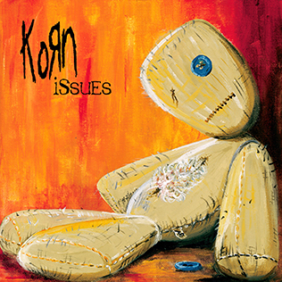

Albert Z.

Professional Summary
A helpdesk professional with expertise in computer systems and informatic systems. Combines strong technical skills with a passion for continuous learning, staying updated and industry-related content.
Education
- Bachelor of Computer Science - University of Caribe Sto. Dgo. RD. (2020-2024)
Work Experience
Audiovisual Resources Administrative - American Languaje Institude.
July 2017 - June 2024
- Conduct periodic inventories of audiovisual equipment and materials.
- Monitor the physical and functional status of the equipment (cameras, projectors, microphones, etc.).
- Manage repairs and preventive maintenance to ensure durability.
- Evaluate the need for new audiovisual resources according to technological trends.
- Request and manage purchases of related equipment or software licenses.
- Ensure that resources are stored in optimal conditions.
- Set up equipment for presentations, recordings, or live broadcasts.
- Troubleshoot technical issues while using the equipment.
- Train users on the correct handling of audiovisual equipment and resources.
Quality Monitor - Phone International Teleservices.
September 2011 - July 2016
- Listen to and evaluate phone calls, chats, emails, or other communication channels between customer service staff and users.
- Identify areas for improvement in interactions to ensure effective and satisfactory service.
- Review performance metrics such as response times, resolution rates, and customer satisfaction.
- Conduct regular audits to verify that established protocols are followed.
- Help agents develop skills such as empathy, problem-solving, and effective communication.
- Design and deliver training sessions for new employees and update the knowledge of the current team.
- Ensure that all staff are aware of quality policies, procedures and standards.
Skills
- Web Developer: ⭐️⭐️⭐️⭐️⭐️
- Networking: ⭐️⭐️⭐️⭐️⭐️
- Inventory control: ⭐️⭐️⭐️⭐️⭐️
- Technical support: ⭐️⭐️⭐️⭐️⭐️
- Customer service: ⭐️⭐️⭐️⭐️⭐️
Awards and Certifications
- Web Developer - Udemy (July 2025)
- CCNA Networking - Infotep (August 2018)
- Customer service - Infotep (September 2015)
Other